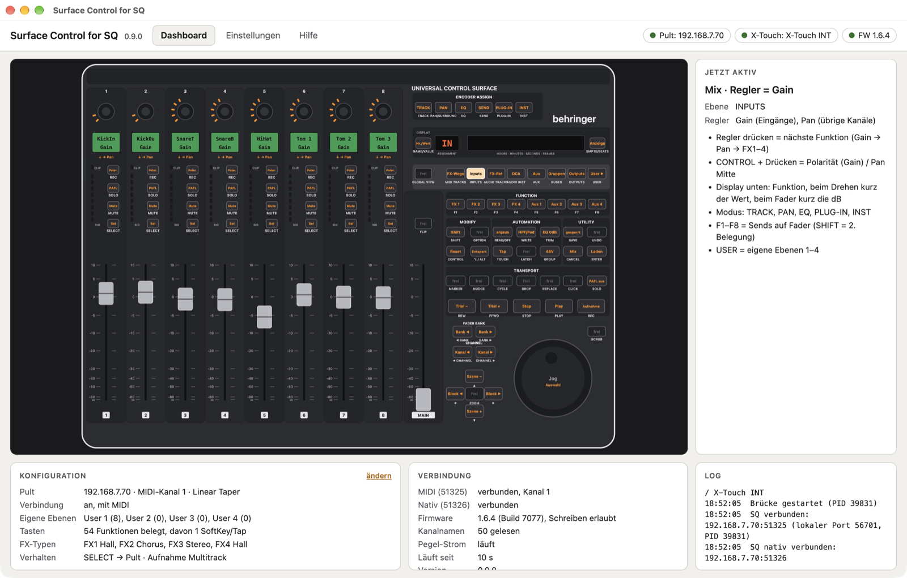
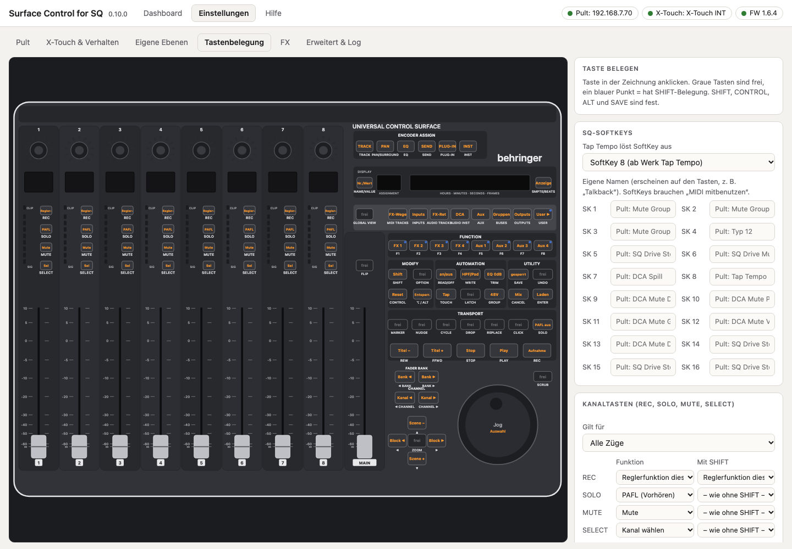

Behringer X-Touch als Bedienoberfläche für Allen & Heath SQBehringer X-Touch as a control surface for Allen & Heath SQ
Motorfader, Namen und Farben vom Pult, Pegel, Mute, PAFL, Auswahl, Gain/Pan/HPF/Trim je Zug, EQ, Gate, Compressor, FX-Parameter, Sends auf Fadern, Szenen, USB-Player – alle Tasten frei belegbar. Für macOS und Windows, Deutsch und Englisch.Motor faders, names and colours from the console, meters, mute, PAFL, selection, gain/pan/HPF/trim per strip, EQ, gate, compressor, FX parameters, sends on faders, scenes, USB player – every key freely assignable. For macOS and Windows, German and English.
Neueste Version herunterladenDownload the latest version Demo ausprobierenTry the demo
Download
| System | DateiFile |
|---|---|
| macOS (Apple Silicon) | …-mac-arm64.dmg |
| Windows 10/11 (64 Bit) | …-win-x64.exe (Installation)(installer) |
| Windows ohne InstallationWindows without installation | …-win-x64-portable.exe |
DMG öffnen, App in „Programme“ ziehen. Die App ist noch nicht signiert: beim ersten Start in Systemeinstellungen › Datenschutz & Sicherheit „Trotzdem öffnen“. Zugriff aufs lokale Netzwerk erlauben.
Open the DMG, drag the app to “Applications”. The app is not signed yet: on first start choose “Open Anyway” in System Settings › Privacy & Security. Allow access to the local network.
Bei „Der Computer wurde durch Windows geschützt“: Weitere Informationen › Trotzdem ausführen.
At “Windows protected your PC”: More info › Run anyway.
EinrichtenSetup
- X-Touch per USB im Mackie-Control-Modus anschließen (beim Einschalten SELECT 1 halten, „MC“). Helligkeit dort mit Regler 8 (50 %).
- App starten. Einstellungen › Pult: IP-Adresse des SQ, „Pult-Verbindung aktiv“.
- Das SQ erlaubt nur eine MIDI-Verbindung – läuft parallel ein Stream-Deck-Plugin, „MIDI mitbenutzen“ aus lassen.
- MixPad: „Follow SQ Channel Select“ und „Follow SQ Mix Select“ einschalten, dann folgt MixPad der Auswahl.
- Connect the X-Touch via USB in Mackie Control mode (hold SELECT 1 while switching on, “MC”). Brightness there with knob 8 (50 %).
- Start the app. Settings › Console: IP address of the SQ, “Console connection active”.
- The SQ allows only one MIDI connection – if a Stream Deck plugin runs at the same time, leave “Use MIDI as well” off.
- MixPad: switch on “Follow SQ Channel Select” and “Follow SQ Mix Select”, then MixPad follows the selection.
BedienungOperation
- Fader, MUTE, SOLO (PAFL), SELECT – Kanaltasten frei belegbar, für alle Züge oder je Kanalart.
- REC schaltet die Funktion des Reglers über dem Zug weiter: Eingang Gain → Pan → HPF → Trim, sonst Pan. Regler drücken = Standardwert.
- Display unten: Funktion; beim Drehen kurz der Wert, beim Fader kurz die dB.
- Faders, MUTE, SOLO (PAFL), SELECT – channel keys freely assignable, for all strips or per channel type.
- REC steps the function of the knob above the strip: input Gain → Pan → HPF → Trim, otherwise pan. Push knob = default value.
- Lower display: the function; briefly the value while turning, the dB while moving a fader.
- Gain/Trim (TRACK), Pan, EQ (gewählter Kanal), Gate/Comp (PLUG-IN), FX (INST, Effekt wird vom Pult erkannt).
- F1–F8: Sends auf Fader zu Aux/FX. USER: vier eigene Ebenen.
- Szenen: ▲▼ vormerken, ENTER zweimal oder ALT + ENTER.
- Gain/Trim (TRACK), Pan, EQ (selected channel), Gate/Comp (PLUG-IN), FX (INST, effect detected from the console).
- F1–F8: sends on faders to aux/FX. USER: four user layers.
- Scenes: ▲▼ to preselect, ENTER twice or ALT + ENTER.

Demo
Übungsmodell im Browser – Tasten anklicken, Regler mit dem Mausrad drehen.
Practice model in the browser – click the keys, turn the knobs with the mouse wheel.